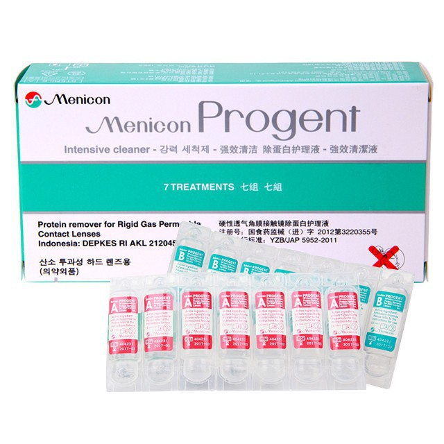

Contact Lens Solutions
There are lots of contact lens solutions available, so it can be confusing to understand which ones are suitable for your type of contact lenses. Best practice would be to follow your optometrist's instructions, but if you've forgotten or are after other options, here is some general information about the different types on offer.
Keep in mind that whilst some solutions are suitable for both soft and rigid contact lenses, many can only be used with one or the other. Also keep in mind that whilst saline can be used to rinse contact lenses, they do not provide any disinfecting power, so make sure you still use another solution for this!
Hydrogen peroxide
Hydrogen peroxide is an effective cleaning and disinfecting agent for both soft and rigid lenses. However, these solutions must be allowed to neutralise into a saline solution, which takes at least 6 hours, as it is otherwise toxic to the eye. This is process is made very easy as the lenses are simply left in specialised case containing a platinum coated disc that drives the reaction for the minimum 6 hour duration. These are also great as they do not contain any preservatives, which some people are allergic to.
Examples include Alcon AoSept Plus and Menicon Soleko Platinum.
| Both soft & rigid contact lenses |
|---|
Multiple purpose solutions
As their name suggests, these are an all-in-one solution that can be used to clean, rinse, and disinfect (which works whilst the lenses are stored in the solution), making them a very convenient option. They do however contain preservatives so may not be for everyone.
Examples for soft contact lenses include Bausch + Lomb Bio True or Renu Fresh, and Alcon Opti-Free PureMoist. For rigid contact lenses, options include Bausch + Lomb Boston Simplus and Menicon MeniCare Plus.
| Soft contact lenses | Rigid contact lenses |
|---|---|
Other cleaning agents
Additional cleaning options include other daily cleaning and conditioning combinations, like the Bausch + Lomb Boston Advance Cleaner and Conditioner duo, and weekly protein removers for rigid contact lenses like Menicon Progent.
| Combination | Protein Remover |
|---|---|
|  |